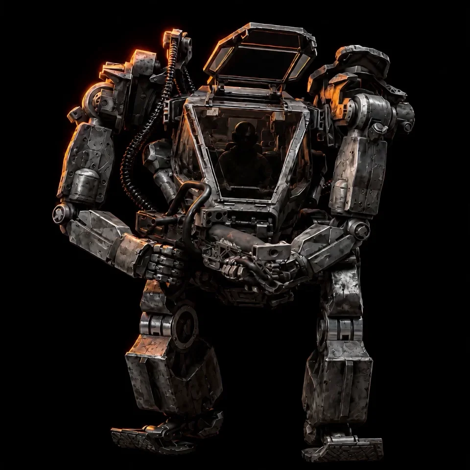
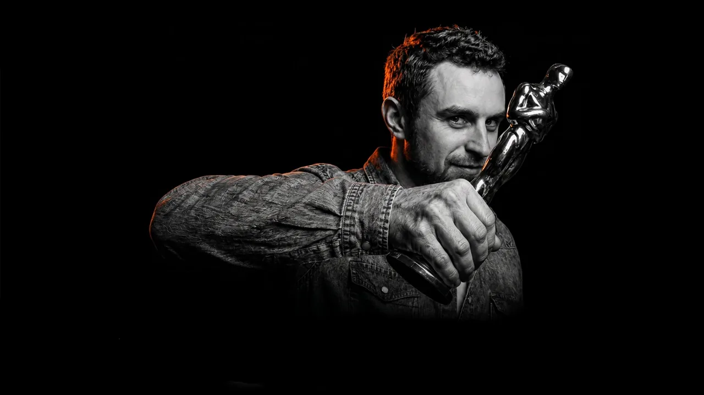
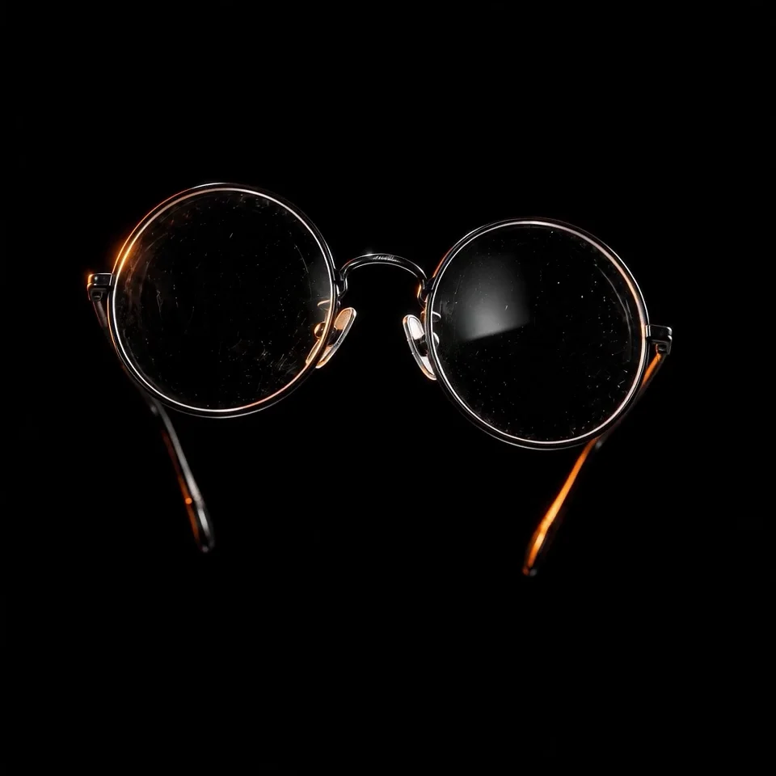
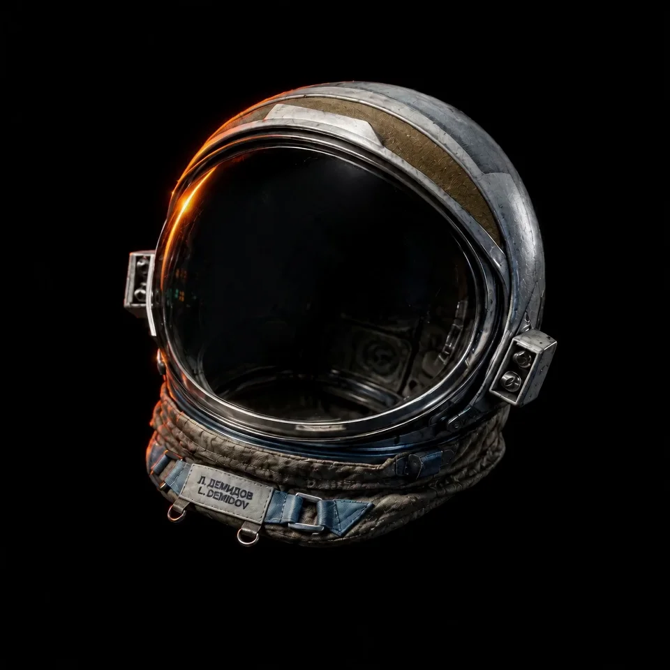
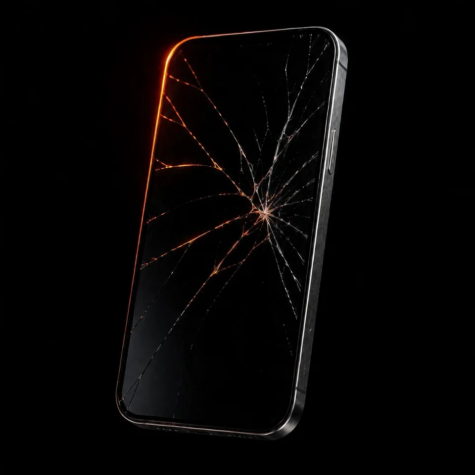

Avatar
A year of sixteen-hour days. Every shot through the pipeline, artist to screen.

VFX EDITOR · SYSTEMS BUILDER · LONDON
Seventeen years of VFX editorial — Avatar, Gravity, Harry Potter, Black Mirror — and now The Lord of the Rings: The Rings of Power. Between shows, I build FRAME/SHIFT: the editorial database I always wished existed.
17 YEARS · FEATURES & EPISODIC · IMDB ↗
Six productions from seventeen years in feature and episodic VFX.

A year of sixteen-hour days. Every shot through the pipeline, artist to screen.

The only person who knew the project structure from the earlier films. I ran editorial.

This film took so long that Clooney's line mentioning MySpace had to be rewritten — Facebook had overtaken it before we finished. Four years of shots, frame by frame.
Facehuggers and chestbursters on screen for split seconds — enough to define the terror of an entire franchise. I've been an Alien fan since childhood. Getting those cuts right mattered.

Charlie Brooker demands invisible effects — harder to pull off than the spectacular ones.

Among the largest VFX undertakings in episodic television. I run the editorial spine: turnovers, tracking, versioning, conform.
ALSO: KAOS · The Witcher: Blood Origin · Dracula · The Dark Crystal · A Discovery of Witches · Brave New World · Guardians of the Galaxy Vol. 2 · Paddington 1–2 · Everest · Jupiter Ascending · Geostorm · The Golden Compass
I own the editorial spine of a show — the system that moves thousands of shots from artists to screen. EDLs, turnovers, versioning, conform, under deadline pressure that never lets up. My job has always been the same: make the invisible work. After seventeen years, I started building the tools to do it better.

Every show I've worked on ran its VFX editorial out of spreadsheets — fragile, manual, rebuilt from scratch each time. FRAME/SHIFT is the alternative: a database built around how shows actually move, where the cut itself drives the pipeline. Shot tracking, turnovers and versioning derived from the EDL, not retyped into cells.
I'm building it the only way I'd trust: inside a live production, on real data, an hour a night. Not a startup. Infrastructure.
THE CUT-DERIVED PIPELINE — the edit is the source of truth; everything else follows from it.
→ Visit FRAME/SHIFT ↗Standalone tools from the cutting room floor — EDL parsing, turnover checks, the small automations that save an afternoon. I share them as I build them. Some will be absorbed into FRAME/SHIFT; the rest stay free and practical.
→ Explore the tools ↗Ten tools in ten days — a public sprint of small, generative and practical experiments. Halftone studios, EDL checkers, even an AI darts coach. Built fast, shipped daily, kept live.
→ Enter the Lab ↗Cutting VFX on a major series. Building FRAME/SHIFT nightly, in production. Writing about editorial systems and AI on LinkedIn, weekly.
Elsewhere: Mr. Lobster — proof I ship AI products outside film. → mrlobster.co.uk ↗
I was the kid who stayed through the credits, wondering who all those people were. It took nine years of studying while working restaurant shifts to become one of them.
Seventeen years later, my name has scrolled past on Avatar, Gravity, Harry Potter and Black Mirror, and I run VFX editorial on some of the biggest series in television.
Somewhere along the way I realised the job was never really about the shots. It was about the system that moves them. So now I build the system — with the same instinct, and much better tools.
For VFX editorial, AI in post-production pipelines, or speaking.